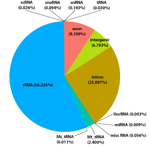
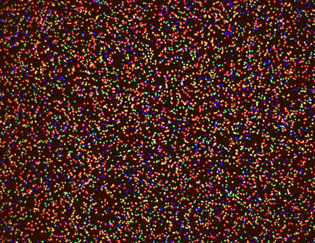
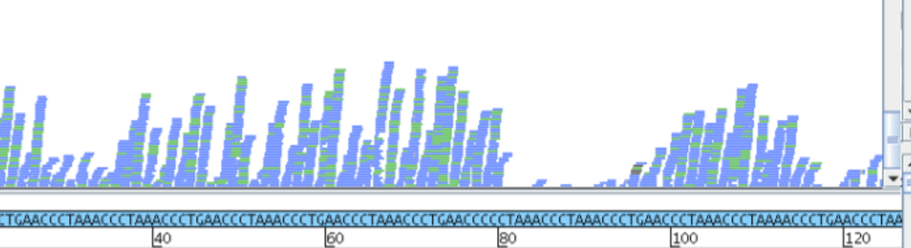
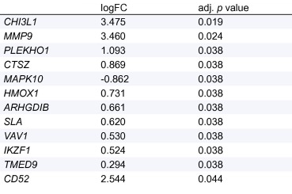
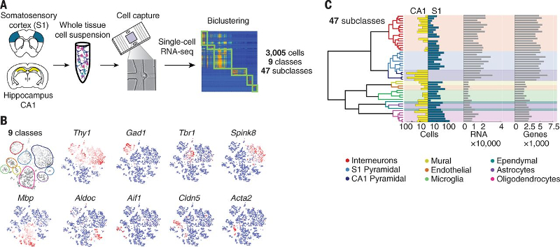
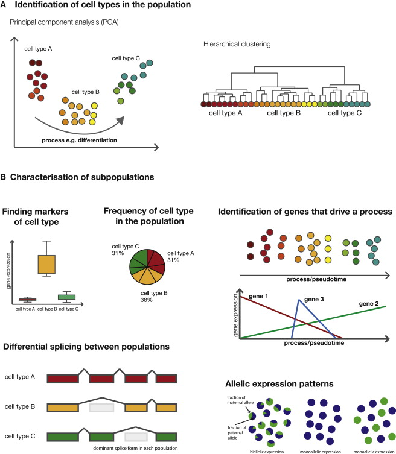
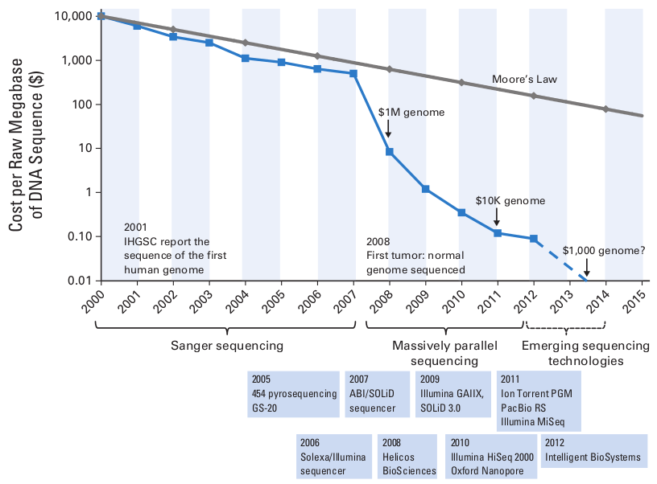
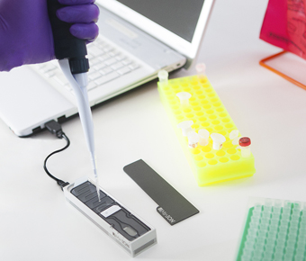

Introducción al RNA-Seq
9 de octubre de 2017
Transcriptómica
Conjunto total de transcriptos presentes en una célula, para un estadio específico del desarrollo o condición fisiológica
Herramientas para el estudio del transcriptoma: tecnologías de alto rendimiento
- Microarrays
- Secuenciación masiva (Next Generation Sequencing, NGS)
Microarrays
- Extraer ARN de muestras
- Construir bibliotecas de ADNc marcadas con fluorocromos
- Poner en placa en igual proporción
- Se detecta el color emitido con una cámara

Secuenciación masiva
-
Diversas plataformas: (Roche 454, SOLiD, Illumina)
Plataformas Illumina

Secuenciación masiva
-
Secuenciación - relación costo/Gb

-
RNA-Seq (2008)
-

- Extraer ARN
- Fragmentarlo
- Construir biblioteca de ADNc
- Secuenciar (Illumina)
RNA-Seq
-
Construcción de bibliotecas
Problema: ¡gran parte del ARN es ribosomal!
Dos opciones: ARNm o ARN total

RNA-Seq
-
Secuenciación con Illumina

RNA-Seq
-
Secuenciación con Illumina
RNA-Seq
-
Secuenciación con Illumina: SR vs PE

Procesamiento primario
-
Tras secuenciar, se obtienen imágenes
- Son varias imágenes (120) por linea
- Se toman por ciclo y por base
- Se analiza intensidad para cada ciclo y se determinan secuencias de clusters ("base-calling")
- El proceso (algoritmo) de base-calling posee cierto error (por presencia de ruido, etc.)
- Todo esto lo hace automáticamente la plataforma, no nosotros
RESULTADO: archivo FASTQ
-
@M00967:43:000000000-A3JHG:1:1101:18327:1699 1:N:0:188 ← identificador
NACGGAGGATGCGAGCGTTA ← secuencia
+
#>>AABABBFFFGGGGGGGG ← calidad
@M00967:43:000000000-A3JHG:1:1101:14069:1827 1:N:0:188
TACGGAGGATGCGAGCGTTA
+
3AA?ABBDBFFBEGGEGGGG
@M00967:43:000000000-A3JHG:1:1101:18044:1900 1:N:0:188
TACGGAGGATGCGAGCGTTG
+
BA@BBBABBFFFGGGGGGGGAlineamiento
Alineo lecturas a mi genoma de referencia
Cuento lecturas alineadas a cada gen

Interpretando resultados
Profundidad de secuenciación -
cobertura
Profundidad de secuenciación o tamaño de la biblioteca
Cantidad de lecturas totales en réplica (ej., 10 M)

Profundidad de secuenciación -
cobertura
Cobertura
Número promedio de lecturas que alinean en una base específica del genoma = cuántas veces una base fue leída en promedio durante el proceso de secuenciación
Profundidad de secuenciación -
cobertura
relación cobertura-tamaño de biblioteca-tamaño del genoma
C = L x N/G <-> N = C x G/L
L longitud de la lectura
N tamaño de la biblioteca en cada réplica
G tamaño haploide del genoma de referencia
Expresión diferencial
Base teórica
Nivel de expresión de un gen ∝ cantidad de lecturas alineadas al mismo
Expresión diferencial
-
Base teórica
Nivel de expresión de un gen ∝ cantidad de lecturas alineadas al mismo
Sin embargo...

genes más largos tendrán más lecturas
Expresión diferencial
Base teórica
Nivel de expresión de un gen ∝ cantidad de lecturas alineadas al mismo
Sin embargo...

réplicas con mayor tamaño de biblioteca tendrán más lecturas
Expresión diferencial
Normalización
-
CPM (Counts Per Million)
106 x (lecturas gen g) / numero total de lecturas alineadas -
RPKM (Reads Per Kilobase of gene Per Million reads)
10 9 x (lecturas gen g)/ [(longitud gen g) x (número total de lecturas alineadas)] -
FPKM (Fragments Per Kilobase of gene Per Million reads)
10 9 x (lecturas gen g)/ [(longitud gen g) x (número total de pares de lecturas alineadas)]
Expresión diferencial
- FC (Fold Change)
- logFC (log Fold Change)
- por ej., usando RPKM
Expresión diferencial
Diseño Experimental
Diseño experimental
-

Diseño Experimental
- Fuentes de error técnico
- Efectos de batch
errores que ocurren desde la fragmentación del ARN hasta que entra en la celda de flujo (PCR, etc.) - Efectos de línea
errores que ocurren desde el ingreso de las muestras a la celda, hasta la obtención de los datos del secuenciador (ej., errores en base-calling)
Diseño Experimental
- Pregunta: ¿Cuántas celdas/líneas debo usar?
- 7 tratamientos, 3 réplicas biológicas por tratamiento, 3 celdas

- Aleatorizar en cada celda
Diseño Experimental
- Pregunta: ¿Cuántas celdas/líneas debo usar?
- Multiplexing

- Permite controlar los efectos de batch y de línea
Diseño Experimental
- Pregunta: ¿Cuántas celdas/líneas debo usar?
- Multiplexing (con réplicas biológicas y técnicas)
-

( )Otros usos de la secuenciación masiva
- Genómica, epigenómica
- DNA-Seq :
WGS (Whole-Genome Sequencing), WES (Whole-Exome Sequencing)
>Detección de variación genética (SNPs, deleciones, inserciones, variaciones estructurales), GWAS - ChIP-Seq (Chromatin Inmuno-Precipitation):
Análisis de interacción de proteinas con ADN - (...lista larga de técnicas...)
- -> Distintos objetivos y formas de obtener bibliotecas, igual procedimiento de secuenciación
¿Qué está pasando en el año 2017?
- Single-cell RNA-Seq (scRNA-seq): análisis del genoma de células individuales
- 
(Zeisel et al. 2015)
Usos de scRNA-seq
-
- Identificación de subpoblaciones celulares en órganos y tejidos
- Búsqueda de marcadores para diferenciar subpoblaciones celulares
- Otros...
(Kolodziejczyk et al. 2015)
¿Qué nos depara el futuro?
-

Third-generation sequencing
- (en desarrollo actualmente)
Third-generation sequencing
-
Ventajas:
- Se secuencian moléculas individuales: evita paso de PCR previo para construcción de bibliotecas y clusters
- Genera lecturas largas (>100pb)
-
Desventajas:
- Alta tasa de error en la identificación de bases
Tecnologías:
- PacBio
- MinION (secuenciador portatil)

-